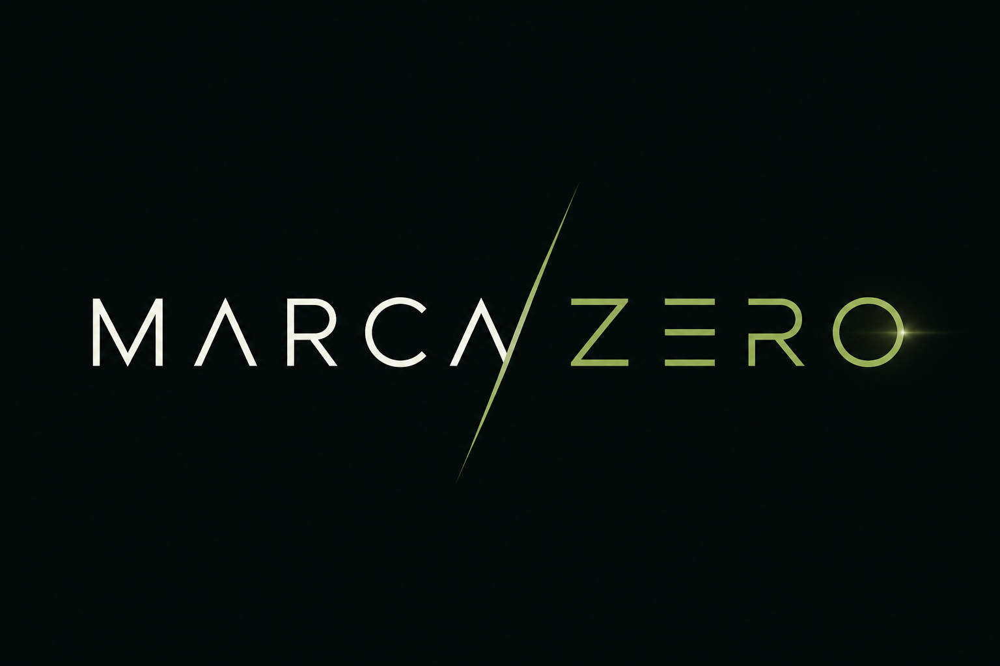
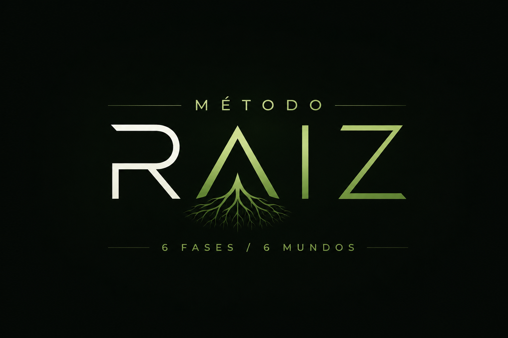

Mentoria individual · Método RAIZ

Do zero à marca. Não é abrir uma loja — é construir uma marca digital com método, IA e visão de longo prazo.
/ Mundo 02 · Terreno — Mercado
O jogo real
de 2026
Antes de plantar, ler o terreno. Cinco anos que mudaram as regras do e-commerce brasileiro — e seis forças que hoje decidem quem sobrevive.
2020–2021
O boom. O e-commerce brasileiro salta ~67,5% na pandemia. O dropshipping "fácil" nasce — e começa a morrer cedo: em abril de 2021, o iOS 14.5 (ATT) quebra o rastreamento e dá início à inflação do CAC.
2022–2023
A maturação. Custos sobem, a loja genérica converte cada vez pior. Nasce a tese do branding dentro do drop. O Remessa Conforme é criado (ago/2023).
2024
A profissionalização. A "taxa das blusinhas" (20% até US$50) muda a conta do importado. A IA generativa explode e entra na operação.
2025
A virada da descoberta. O TikTok Shop estreia no Brasil em maio. O ICMS sobe para ~20% em vários estados. A IA vira camada operacional do varejo.
2026 — hoje
O agora. Imposto federal até US$50 zerado de novo (12/05) — mas o ICMS estadual permanece e a reforma tributária segue em transição. A Meta confirma alta de ~12,5% no custo de anúncio no Brasil. O GMV do TikTok Shop cresce ~102x em um ano.
projeção do e-commerce BR em 2026 (ABComm) — ticket médio ~R$565
maior mercado de beleza do mundo é o Brasil, crescendo ~7,2% ao ano
crescimento do GMV do TikTok Shop no Brasil em um ano
dos novos players quebram o caixa nos 3 primeiros meses — quase sempre por fornecedor e logística
Força 01
A era do genérico acabou
Marca, experiência e atendimento viraram pré-requisito — não diferencial.
branding é coluna do método, não módulo final.
Força 02
A logística nacional venceu
Para operação séria: prazo curto, sem alfândega, menos devolução.
nacional como padrão de maturidade; internacional para testar.
Força 03
Tributação instável
Mudou três vezes em ~2 anos; o IVA vai encarecer o importado até 2033.
nenhuma margem construída sobre janela de imposto.
Força 04
CAC inflando + Meta automatizada
Na era Andrômeda, criativo e sinal mandam mais que segmentação manual.
peso em oferta + criativo — onde IA com direção humana brilha.
Força 05
Discovery commerce
TikTok Shop é a avenida de descoberta barata; beleza e utensílios lideram as lives.
pilar do método, não apêndice — ainda mais com ela na câmera.
Força 06
IA como camada operacional
Personalização e automação já movem receita no varejo inteiro.
IA como equipe: pesquisa, copy, design, criativo, análise.
A era do genérico acabou. Não é abrir uma loja — é construir uma marca.
/ Mundo 03 · A equipe — Claude & IA
Vocês não
começam sozinhos
Na sessão 2, montamos a equipe: um time de IA dirigido por critério humano. Aceleradora, não milagre — curadoria e direção sempre.
Pesquisador de mercado
Lê qualquer nicho em horas, não semanas: tamanho, players, dores, preço.
Copywriter
Nomes, ofertas, páginas e legendas — sempre com a voz da marca, nunca texto de robô.
Designer
Identidade, mockups e direção de arte. A logo nasce de prompt — e de verificação humana.
Diretor de criativo
Variações de anúncio, edição e produto-em-cena para alimentar o motor de conteúdo.
Analista
Métricas sem autoengano: margem real, funil, decisão de matar, manter ou escalar.
A IA constrói a cena.
Nunca o produto.
Foto e vídeo são sempre do produto verdadeiro — lei do consumidor, política de anúncio, ANVISA quando for beleza. A IA cria o cenário, o mundo e o lifestyle ao redor. Essa linha não se cruza.
/ Mundo 04 · Terreno → Marca — Sourcing
Produto real
não se inventa
Sourcing é decisão de método, não de fé: nacional, internacional ou híbrido — com os trade-offs honestos na mesa, decididos na Matriz de Terreno.
O caminho híbrido
Testar barato — inclusive internacional, com frete flat para qualquer CEP — e migrar o vencedor para nacional ao escalar: prazo, tributo e marca melhores. A decisão é do casal, via método; nunca dogma.
Raio-X do frete · tells de drop internacional
- Menção a envios internacionais, alfândega, taxas de liberação
- Prazo longo e amplo, que só conta após "o envio"
- "Estoque do fornecedor" e preparo separado do transporte
- Frete flat nacional + itens do pedido chegando separados
Raio-X do frete · tells de operação nacional
- Postagem em até ~2 dias úteis
- PAC/Sedex nomeados; frete varia por CEP e peso
- Prazo conta a partir da emissão da nota fiscal
- CNPJ visível, sem menção a importação
O pedido-teste sai. É o item de maior lead-time do programa: o produto verdadeiro precisa estar em mãos quando o conteúdo começar, na Fase 4.
A principal causa dos 80%+ que quebram nos três primeiros meses é fornecedor e logística ruins. Por isso este mundo vem antes da loja.
/ Mundo 05 · Identidade — IA + Canva
Identidade 100% IA.
Direção 100% humana.
Três sessões dedicadas (13–15) para a marca nascer com cara de marca — não de loja improvisada. A criação é dirigida e verificada por gente; o Canva entra na montagem e exportação.

As duas logos deste programa nasceram exatamente assim: IA com direção humana.
Grafia correta
A IA renderiza texto bem — o humano confere letra por letra.
Legível pequena
Funciona no avatar, na etiqueta e no favicon — não só no banner.
Versão mono
Preto-e-branco resolve? Se só vive com efeito, não é logo.
Export limpo
PNG transparente e vetor, prontos para qualquer aplicação.
Checkpoint: mini-brandbook. Posicionamento, arquétipo, naming com domínio e handles travados, símbolo, paleta e sistema aplicado — a marca inteira, pronta para virar loja.
/ Mundo 06 · Vitrine — Shopify
Uma home que
vende em segundos
A loja é onde a marca vira experiência de compra. Plataforma travada: Shopify — padrão profissional desde o primeiro dia, consumindo o brandbook inteiro.
- S.19
Home que vende em segundos
Hierarquia, promessa e prova no primeiro scroll — o visitante entende o que é e por que importa.
- S.20
Coleções e navegação mobile-first
Categorias que pensam como o cliente compra — no celular, onde a venda acontece.
- S.21–22
Página de produto que converte
Anatomia, copy, SEO, provas, FAQ e gatilhos — com os mockups do kit de identidade.
- S.24
Políticas e confiança
Frete honesto, ANVISA e legal em dia, atendimento desenhado — confiança é conversão.
Loja no ar. Compra-teste real e QA mobile completo — checkpoint da Fase 3, com a vitrine aberta para o mundo.
/ Mundo 07 · Vitrine — Checkout
Onde o ticket
cresce
Do carrinho ao Pix em segundos — e cada passo desenhado para subir o ticket médio sem quebrar a confiança de quem compra.
Carrinho
sem fricção, sem surpresa de frete
Checkout
poucos campos, confiança visível
Pix & parcelas
o pagamento do jeito do Brasil
Order bump
oferta complementar no ato
Upsell
ticket sobe depois do sim
Recuperação
carrinho e Pix abandonados voltam
Yever
Checkout transparente, desenhado para AOV: bump, upsell e recuperação nativos. Mais mecânica de ticket, mais custo de setup.
Mercado Pago
Nativo e enxuto para começar: Pix, parcelamento e antifraude prontos, sem fricção de integração.
A decisão fecha ao vivo — com os números da Fase 2 na mesa, não no achismo. Mecânica completa de ticket entra na sessão 23.
/ Mundo 08 · Ser encontrado — Google
Quando procurarem,
vocês existem
Marca que não aparece na busca não é marca — é segredo. Aqui o território digital é travado cedo e o orgânico trabalha de graça, para sempre.
Sessão 12
Território travado
Domínio e handles garantidos antes da logo existir — o nome é de vocês em todos os lugares.
Sessão 21
SEO de produto
Página de produto escrita para gente e para o Google — tráfego que não se paga por clique.
Quando maduro
Shopping & brand search
Google Shopping e busca de marca entram quando a operação valida — sem queimar etapa.
/ Mundo 09 · Sinal — TikTok Shop
Não é anúncio.
É descoberta.
O TikTok Shop estreou no Brasil em maio de 2025 e virou a avenida de descoberta mais barata do mercado — a casa do discovery commerce.
- ~102x em um ano
crescimento do GMV do TikTok Shop no Brasil
- beleza lidera as lives
cosméticos e utensílios são as categorias que mais vendem ao vivo
- orgânico desde cedo
descoberta barata antes do primeiro real de mídia paga — canal travado no método
Ela na câmera é vantagem estrutural
Conteúdo demo-friendly com desenvoltura real, desde a Fase 4 — o rosto da marca construindo audiência enquanto a concorrência paga CPM. Não é detalhe: é estratégia.
Setup na sessão 30 (18/09) · primeira live na sessão 40 (23/10) · lives de pico no esquenta e na semana da Black Friday.
/ Mundo 10 · Tração — Meta Ads
Tráfego por último
é método — não medo
Meta entra quando há criativo e sinal — nunca verba cega. Com CAC inflando (+12,5% no Brasil em 2026) e a automação Andrômeda, criativo e sinal valem mais que qualquer segmentação manual.
Pé no chão
- Verba de adsR$50–100/dia
- ROAS maduro~2x
Precisa ser verdade: 1 produto validado, oferta clara, loja confiável.
Bom
- Verba de adsR$150–250/dia
- ROAS maduro~2,3x
Precisa ser verdade: produto vencedor, criativo forte, empurrão de Q4.
Agressivo
- Verba de adsR$300+/dia
- ROAS maduro~2,5x+
Precisa ser verdade: vencedor escalável, Black Friday bem executada, caixa.
Cenários, não promessas. Meses 1–3 são construção (provável resultado baixo ou negativo); a validação chega no 3–4; a maior parte do faturamento concentra no Q4. Estrutura de validação com pixel/CAPI na sessão 31; primeira campanha no ar na 32; escala controlada na 44.
/ Mundo 11 · O mapa — Método RAIZ
Do solo
ao fruto
Seis fases, 53 sessões presenciais — terças e sextas, 2h — de 09 de junho a 08 de dezembro de 2026. A raiz cresce primeiro; o fruto vem no Q4.
Fase 1Terreno
Onde plantar. O jogo real de 2026, a equipe de IA, leitura de mercado, longlist de nichos, banco de referências, sourcing e conformidade — até a Matriz de Terreno decidir nicho, território e sourcing.
Everton co-pilota forteFase 2Marca
O que construir. Produto-herói e pedido-teste, precificação que sobrevive, posicionamento, naming com domínio travado e a identidade visual construída com IA em três sessões — até a oferta.
Everton co-pilotaFase 3Vitrine
Onde vender. Arquitetura da loja e decisão de checkout, home, coleções mobile-first, página de produto que converte, mecânica de ticket, políticas e confiança.
Executa juntoFase 4Sinal
Atrair e ler a resposta. Linha editorial com ela como rosto, criativo que vende, produção com o produto real, criativos com IA, TikTok Shop ativo, Meta estruturada — primeira campanha no ar.
SupervisionaFase 5Tração
Confirmar o que funciona. Métricas que importam, diagnóstico de funil, otimização de criativo e oferta, matar-manter-escalar com critérios frios, recompra e LTV, primeira live.
Eles dirigem · supervisionaFase 6Escala
Multiplicar. Operação preparada para volume, estratégia de Q4, oferta de Black Friday com urgência real, aquecimento e captura, a Black Friday gerida ao vivo — e o playbook que fica.
Eles dirigem · aconselha/ o andaime decai — transferência de autonomia
/ marcos no trilho
- 07/07Pedido-teste sai — o produto real entra em rotasessão 9
- 01/09Loja no ar, com compra-teste realsessão 25
- 25/09Primeira campanha no ar — Meta + TikTok + orgânicosessão 32
- 27/10Unit economics: a conta fecha?sessão 41
- 27/11Black Friday ao vivo — o pico gerido em tempo realsessão 50
- 08/12Voo solo — plano de 90 dias e encerramentosessão 53
Sucesso definido: primeiras vendas + indícios de lucro. O resto é consequência.
/ Mundo 12 · O começo
A raiz começa antes
da primeira venda
Uma marca construída do zero, com método, IA e visão de longo prazo — sem promessa de enriquecimento rápido, com trade-offs reais na mesa.
Começamos
09 / junho
/ prontos para a sessão 1
- ChatGPT Plus, Claude Pro e Canva Pro ativos — a equipe de IA contratada
- Tempo reservado: terças e sextas, 2h, sem furo
- Mente de dono: as decisões de nicho, sourcing e checkout são de vocês — via método
método raiz — 6 fases / 6 mundos